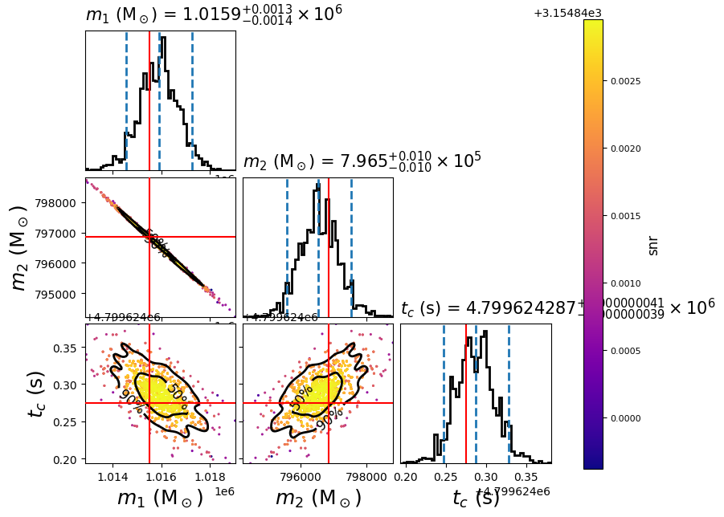

LISA SMBHB injection and parameter estimation
This example shows how to use PyCBC for time-domain LISA TDI noise generation and supermassive black hole binaries (SMBHB) signal injection. This one is similar to LISA parameter estimation for simulated SMBHB from LDC example, the main difference is we generate our own mock data in this example. In order to to that, we use LISA TDI PSD module to generate the stationary and Gaussian noise for each TDI channel in the time domain, then we use waveform injection module to add the simulated signal into the simulated noise.
First, we use the following configuration file to define the parameters of our SMBHB injection, we use the same parameters from the SMBHB signal in LISA parameter estimation for simulated SMBHB from LDC example:
[variable_params]
[static_params]
; This assumes all those values are in LISA frame.
; You can set "ref_frame = SSB", but then you should also add it to
; "static_params" section in PE .ini file.
ref_frame = LISA
approximant = BBHX_PhenomD
; You can use "1.5" or "2.0" for TDI.
; Please use the same TDI version for PSD and static_params in the PE .ini file.
tdi = 1.5
mass1 = 1015522.4376
mass2 = 796849.1091
spin1z = 0.597755394865021
spin2z = 0.36905807298613247
distance = 17758.367941273442
inclination = 1.5970175301911231
coa_phase = 4.275929308696054
eclipticlongitude = 5.4431083771985165
eclipticlatitude = -1.2734504596198182
polarization = 0.22558110042980073
tc = 4799624.274911478
t_obs_start = 31536000
; Put LISA behind the Earth by ~20 degrees.
t_offset = 7365189.431698299
f_lower = 1e-4
f_ref = 1e-4
f_final = 0.1
Then we run the following bash script to create a .hdf file that contains same information:
#!/bin/sh
pycbc_create_injections --verbose \
--config-files injection_smbhb.ini \
--ninjections 1 \
--seed 10 \
--output-file injection_smbhb.hdf \
--variable-params-section variable_params \
--static-params-section static_params \
--dist-section prior \
--force
Here, we use a similar configuration file for parameter estimation, we also use
Relative model. We also just
set chirp mass, mass ratio and tc as variable parameters, tc, eclipticlongitude, eclipticlatitude
and polarization are defined in the LISA frame:
[data]
instruments = LISA_A LISA_E LISA_T
trigger-time = 4800021.15572853
analysis-start-time = -4800021
analysis-end-time = 26735979
pad-data = 0
sample-rate = 0.2
fake-strain = LISA_A:analytical_psd_lisa_tdi_AE LISA_E:analytical_psd_lisa_tdi_AE LISA_T:analytical_psd_lisa_tdi_T
; fake-strain-extra-args = LISA_A:len_arm:2.5e9 LISA_A:acc_noise_level:2.4e-15 LISA_A:oms_noise_level:7.9e-12 LISA_A:tdi:1.5 LISA_E:len_arm:2.5e9 LISA_E:acc_noise_level:2.4e-15 LISA_E:oms_noise_level:7.9e-12 LISA_E:tdi:1.5 LISA_T:len_arm:2.5e9 LISA_T:acc_noise_level:2.4e-15 LISA_T:oms_noise_level:7.9e-12 LISA_T:tdi:1.5
fake-strain-extra-args = len_arm:2.5e9 acc_noise_level:2.4e-15 oms_noise_level:7.9e-12 tdi:1.5
fake-strain-seed = LISA_A:100 LISA_E:150 LISA_T:200
fake-strain-flow = 0.0001
fake-strain-sample-rate = 0.2
fake-strain-filter-duration = 31536000
psd-estimation = median-mean
psd-inverse-length = 267840
invpsd-trunc-method = hann
psd-segment-length = 267840
psd-segment-stride = 133920
psd-start-time = -4800021
psd-end-time = 26735979
channel-name = LISA_A:LISA_A LISA_E:LISA_E LISA_T:LISA_T
injection-file = injection_smbhb.hdf
[model]
name = relative
low-frequency-cutoff = 0.0001
high-frequency-cutoff = 0.1
epsilon = 0.01
mass1_ref = 1015522.4376
mass2_ref = 796849.1091
tc_ref = 4799624.274911478
spin1z_ref = 0.597755394865021
spin2z_ref = 0.36905807298613247
[variable_params]
mchirp =
q =
tc =
[static_params]
; Change it to "ref_frame = SSB", if you use SSB frame in injection file.
ref_frame = LISA
approximant = BBHX_PhenomD
; You can use "1.5" or "2.0" for TDI.
; Please use the same TDI version for PSD and injection file.
tdi = 1.5
coa_phase = 4.275929308696054
eclipticlongitude = 5.4431083771985165
eclipticlatitude = -1.2734504596198182
polarization = 0.22558110042980073
spin1z = 0.597755394865021
spin2z = 0.36905807298613247
distance = 17758.367941273442
inclination = 1.5970175301911231
t_obs_start = 31536000
f_lower = 1e-4
; Put LISA behind the Earth by ~20 degrees.
t_offset = 7365189.431698299
[prior-mchirp]
name = uniform
min-mchirp = 703772.7245316936
max-mchirp = 860166.6633165143
[prior-q]
name = uniform
min-q = 1.1469802543574181
max-q = 1.401864755325733
[prior-tc]
name = uniform
min-tc = 4798221.15572853
max-tc = 4801821.15572853
[waveform_transforms-mass1+mass2]
name = mchirp_q_to_mass1_mass2
[sampler]
name = dynesty
dlogz = 0.1
nlive = 150
; NOTE: While this example doesn't sample in polarization, if doing this we
; recommend the following transformation, and then sampling in this coordinate
;
; [waveform_transforms-polarization]
; name = custom
; inputs = better_pol, eclipticlongitude
; polarization = better_pol + eclipticlongitude
Now run:
#!/bin/sh
export OMP_NUM_THREADS=1
pycbc_inference \
--config-files `dirname "$0"`/lisa_smbhb_relbin.ini \
--output-file lisa_smbhb_inj_pe.hdf \
--force \
--nprocesses 1 \
--fft-backends fftw \
--verbose
# PLEASE NOTE: This example is currently forcing a FFTW backend because MKL
# seems to fail for FFT lengths > 2^24. This is fine for most LIGO
# applications, but an issue for most LISA applications.
To plot the posterior distribution after the last iteration, you can run the following script:
#!/bin/sh
pycbc_inference_plot_posterior \
--input-file lisa_smbhb_inj_pe.hdf \
--output-file lisa_smbhb_mass_tc.png \
--z-arg snr --plot-scatter --plot-marginal \
--plot-contours --contour-color black \
--parameters \
'mass1_from_mchirp_q(mchirp,q)':mass1 \
'mass2_from_mchirp_q(mchirp,q)':mass2 \
tc \
--expected-parameters \
'mass1_from_mchirp_q(mchirp,q)':1015522.4376 \
'mass2_from_mchirp_q(mchirp,q)':796849.1091 \
tc:4799624.274911478 \
In this example it will create the following plot:
{kind=link}
The scatter points show each walker’s position after the last iteration. The points are colored by the SNR at that point, with the 50th and 90th percentile contours drawn. The red lines represent the true parameters of injected signal.